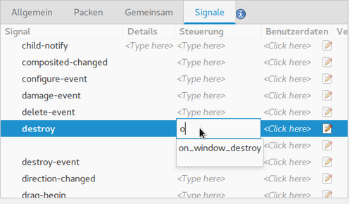

Fenster mit Aussicht
| Anke (encarsia) | Auch verfügbar in: English
Minimalbeispiel
Glade
Nach dem Start präsentiert sich Glade dreigeteilt, links ist die Fenster-/Widget-Auswahl, in der Mitte die Projektansicht und rechts eine Baumansicht des Projekts, im unteren Bereich können Eigenschaften und Signale editiert werden.
Nun erstellt man ein Fenster und gibt ihm eine Kennung. Mit dieser Kennung wird das Objekt im Programmcode angesprochen.

Bemerkung
Die Glade-Oberfläche wurde mit der Version 3.22 modernisiert. Details dazu gibt es im Artikel Überarbeitete Oberfläche in Glade 3.22.
Um die Ausführung von Funktionen durch ein Widget zu initiieren, müssen sie mit Signalen gekoppelt werden. Signale können je nach Objektart verschieden ausgelöst werden, durch Anklicken, Markieren, Editieren, Schalten etc.
Um in diesem Beispiel das Programmfenster mit dem Schließen-Button zu schließen, wird das Signal destroy benötigt. Beim Funktionsnamen hilft die Vorschlagsfunktion nach dem Schema on_kennung_signal. Ich empfehle, diesen Vorschlägen im Allgemeinen zu folgen, sie erleichtern die Tipparbeit und hält die Codestruktur konsistent.
{kind=link}
Glade selbst erzeugt keinen Programmcode, sondern eine XML-Datei des Typs GtkBuilder.
Python
First things first. Die GtkBuilder-Funktionen stehen im Gtk-Modul aus den Python GObject Introspection-Bindings zur Verfügung:
import gi gi.require_version("Gtk", "3.0") from gi.repository import Gtk
Nach dem Aufruf von Gtk.Builder() wird die Glade-Datei geladen.
builder.add_from_file(gladefile)
Um die Übersicht zu bewahren, können dies auch mehrere Dateien sein, es sollte allerdings auf eine eindeutige Kennung geachtet werden. Bei doppelten gleichen Kennungen kann nur die zuletzt geladene mit get_object(kennung) angesprochen werden.
Anschließend werden die Signale verbunden. Meine Empfehlung ist hier, die dazugehörigen Funktionen der Übersicht wegen in eine eigene Klasse auszulagern.
self.builder.connect_signals(Handler())
Dieses Beispiel-Skript öffnet ein leeres Fenster, das per Schließen-Button beendet werden kann.
Ohne Glade
Das oben konstruierte Beispiel entspricht dem Basisbeispiel im Python GTK+ 3 Tutorial:
import gi gi.require_version("Gtk", "3.0") from gi.repository import Gtk win = Gtk.Window() win.connect("delete-event", Gtk.main_quit) win.show_all() Gtk.main()
Man sollte sich von der Kürze dieses Beispiels nicht täuschen lassen. Die eigentlichen Elemente, Boxen, Widgets, Buttons, Leisten etc. fehlen hier komplett.
Listings
Python
#!/usr/bin/python # -*- coding: utf-8 -*- import gi gi.require_version("Gtk", "3.0") from gi.repository import Gtk class Handler: def on_window_destroy(self, *args): Gtk.main_quit() class Example: def __init__(self): self.builder = Gtk.Builder() self.builder.add_from_file("01_minimal.glade") self.builder.connect_signals(Handler()) window = self.builder.get_object("window") window.show_all() def main(self): Gtk.main() x = Example() x.main()
Glade
<?xml version="1.0" encoding="UTF-8"?> <!-- Generated with glade 3.20.0 --> <interface> <requires lib="gtk+" version="3.20"/> <object class="GtkApplicationWindow" id="window"> <property name="can_focus">False</property> <property name="title" translatable="yes">Titel</property> <signal name="destroy" handler="on_window_destroy" swapped="no"/> <child> <placeholder/> </child> <child> <placeholder/> </child> </object> </interface>
Kommentare
Comments powered by Disqus